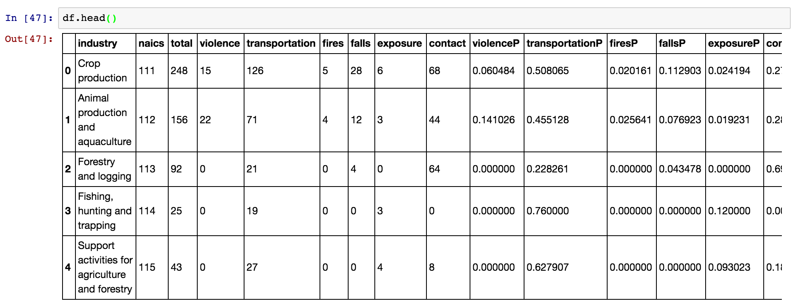
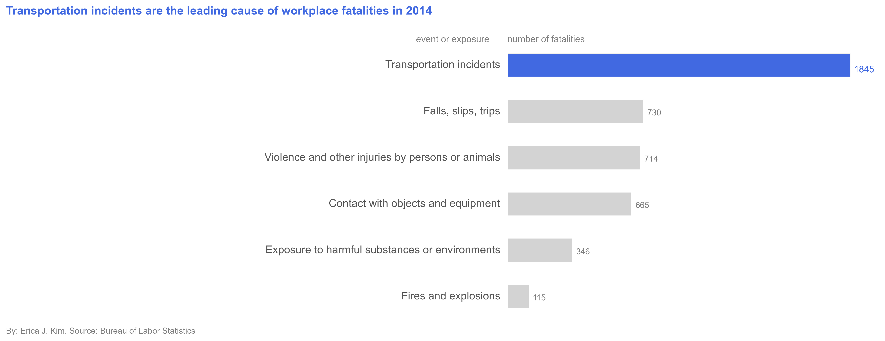
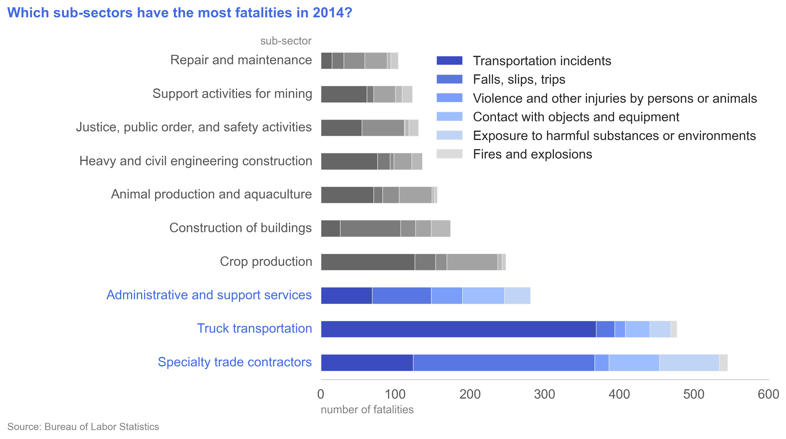

Working with data from the Bureau of Labor Statistics, part 1
2014 Census of Fatal Occupational Injuries, or how to scrape data from pdfs
CLICK here to SKIP to the end, and see PICTURES
CLICK here to see part 2 of Working with data from the Bureau of Labor Statistics
Introduction
The Bureau of Labor Statistics (BLS) website has many datasets pertaining obviously
to labor statistics - in particular, the main subjects are:
- Inflation and Prices
- Employment & Unemployment
- Pay & Benefits
- Spending & Time Use
- Productivity
- Workplace Injuries
- International
- Regional Resources
There are lots and lots of data files on the website (it IS a government statistics organization, after all), for any
data junkie to be quite happy with. However, these are
maddeningly horrific and ugly files! While some of the datasets are in relatively clean Microsoft Excel
format, the majority are either contained in tables within PDF files, or in easy-to-parse but very cryptic plain text
files.
2014 Census of Fatal Occupational Injuries
For the first part of this section, I'll give an example of working with one of the BLS's pdf files. I will investigate
Workplace Injuries, specifically focusing on the number of different types of fatalities in each industry. The primary
file is "cftb0286.pdf", and can be found here, under
"2014 Census of Fatal Occupational Injuries (preliminary data) -
Industry by event or exposure, 2014 (PDF 272K)".
Here is the first page of the 35-page document:

Here are some other sections from the same document:
from page 12:

from page 31:

from page 33:

What is wrong with these images??
- "Total" column is unclear
If you look closely, you can see some quirky things with the data. So many quirky things...
First, we can see that the table has 9 primary columns: Industry; NAICS code; Total fatal injuries; Violence and other
injuries by persons or animals; Transportation incidents; Fires and explosions; Falls, slips, trips; Exposure to
harmful substances or environments; and Contact wiht objects and equipment. NAICS stands for the North American
Industry Classification System, and is just the numeric code for each industry/sub-industry/etc. Based on the name, I would assume "Total"
to be the sum (or total) of the last 6 columns that give the various fatality causes. However, we can
very quickly see that this is not the case, if you look at the first example and the rows for Soybean farming, Wheat farming,
Corn farming, Rice farming, etc. What total is, then, is quite cryptic.
- Hierarchical relationship between industries
Second, we see that there are varying levels of industries within the table, with levels differentiated by the amount of
indentation in the industry field name as well as the number of digits in the NAICS code field. We can see this in the first example,
where Crop production contains Oilseed and grain
farming, and Oilseed and grain farming contains Soybean farming, Wheat farming, Corn farming, Rice farming, and Other grain farming, and so on.
I would expect that the sub-industries numbers should add up to make the priamary industry's numbers, but
this is not the case. If we look at the 4th example, we see that Executive, legislative, and other general government support
has 4 total deaths, while its sub-industry, Public finance activities, has just 1 total death. We can see this same issue throughout all
of the images, and in the entire original pdf table. By including every row, we may inadvertently be double-counting. Additionally, we
should only make comparisons within the same industry hierarchical level. It would not make sense to compare the entire Natural
resources and mining industry with the sub-sector Sugar beet farming.
Third, there are numerous duplicated rows. In the 4th example, the Public administration row is repeated twice.
In that same example, the Executive, legislative,
and other general government support rows are almost identical, except for a slight difference in the NAICS number. While these rows
occur next to one another, we also see duplicates occurring across different pages. For example, we see Utilities; Electric power
generation, transmission, and distribution; Electric power generation; Water, sewage and other systems, etc. rows occurring first on
page 12 and then page 31. In this case, the NAICS numbers are identical, while the actual death figures are different.
This occurs dozens of throughout the document. How do we deal with such inconsistencies?
Fourth, parsing a pdf in python (or in any language) is not straight-forward.
A pdf is just a stable, static image that prints easily, and is not meant for text/number extraction.
However, I don't want to print the document - I want the
information in a nice, tidy format, preferably a python Pandas dataframe! While there are a few python libraries as well as stand-alone websites that
claim to do pdf parsing, I didn't have too much luck with what I tried, with information not getting parsed correctly.
Solutions
The most important thing is that we are aware of these issues, particularly points 1-3. We can use the Total column, and just
keep in mind that the
different fatality categories do not necessarily add up to 'Total', for whatever reason. For point 2, I will just look at
the sub-sector level, which corresonds to rows that have 3-digit NAICS codes. This is the most general level described in the
table, and works well for giving a correspondingly general view of workplace fatalities. Point 3 is mostly fixed by only using
sub-sector levels. However, when we still have identical sub-sector levels in the table, I will just input both, and keep this in mind for any
specific, future analysis (for example, use the mean values). And for the fourth point...
Transforming data from PDF tables to Pandas dataframes
So, I did something (maybe) a little funny for this. I copy and pasted each table from the pdf file into my favorite text editor (Sublime Text).
Is there a better way to do this? Probably. But considering I don't normally deal with pdf's, and maybe will never have to again after
this exercise, the relatively dumb way is faster in the short-run. The result of this was that
each row of the table was correctly placed into its own line in the text file. I then saved the file as a normal text file, and then
opened up Jupyter Notebook (formally Ipython Notebook), to do the rest of the data munging and analysis.
Here, I'm opening the file ("fatalities.txt") and appending each line into an array.
def open_file():
with open("fatalities.txt", "r") as ins:
array = []
for line in ins:
array.append(line)
return array
However, there are lots of issues:
- Each row of the table is just one big entry in the array. I want to break down each
row correctly, so that "industry", "naics code", "total fatal injuries", "violence", "transportation", "fires", "exposure",
and "contact" are all placed in their cells/columns
- We need to get rid of extraneous whitespace characters
- The original PDF table uses "--" to signify the number 0 - let's fix this
- Everything is a string - let's change the numeric values into integers
- As mentioned before, the original PDF contains duplicated rows - let's get rid of these
def open_file():
with open("fatalities.txt", "r") as ins:
array = []
for line in ins:
array.append(line)
return array
def clean_up(array):
for line_num,line in enumerate(array):
line = array[line_num].strip("\n") # Remove newline character
if "--" in line: # Change "--" to 0
line = re.sub("--", "0", line)
array[line_num] = line
return array
def create_df(array):
industry=[]
naics=[]
total=[]
violence=[]
transportation=[]
fires=[]
falls=[]
exposure=[]
contact=[]
regex = re.compile("[A-Za-z(]")
for line_num,line in enumerate(array):
words = line.split()
linetitle = []
for w in words:
if regex.match(w[0]):
words = words[1:]
linetitle.append(w)
industry_row=' '.join(linetitle)
for w_num,w in enumerate(words):
words[w_num]=w.replace(",","") # remove commas in numbers
if len(words)==8: # NAICS code is non-blank entry
if len(words[0])==3: # NAICS code is 3-digits, meaning sub-sector level
industry.append(industry_row)
naics.append(int(words[0]))
total.append(int(words[1]))
violence.append(int(words[2]))
transportation.append(int(words[3]))
fires.append(int(words[4]))
falls.append(int(words[5]))
exposure.append(int(words[6]))
contact.append(int(words[7]))
last_industry_name = industry_row
# Create pandas dataframe object from dictionary
d={'industry':industry,
'naics': naics,
'total': total,
'violence': violence,
'transportation': transportation,
'fires': fires,
'falls': falls,
'exposure': exposure,
'contact': contact}
df = pd.DataFrame(d)
cols = ['industry','naics','total','violence','transportation','fires','falls','exposure','contact']
df = df[cols]
return df
Ok! That was not so bad, actually, and now we have a very nice dataframe that looks like this:

We can also create
some helper functions, in order to:
- Create new features, such as the percent of all fatalities for an industry that are
due to violence (i.e. divide 'violence' column by 'total' column. NOTE: the original
data is quite messy, such that some rows have 0 'total' fatalities but non-zero entries
for specific categories - in those cases, we will insert a NaN rather than an Inf
- Plot date in the same format
def modify_df(df):
df['violenceP']=df.violence/df.total
df['transportationP']=df.transportation/df.total
df['firesP']=df.fires/df.total
df['fallsP']=df.falls/df.total
df['exposureP']=df.exposure/df.total
df['contactP']=df.contact/df.total
df=df.replace([np.inf, -np.inf], np.nan) # replace any inf values with nan values
return df
def create_barchart(df,column_name,num,title_string):
tempdf=df.sort_values(by=column_name,ascending=False)[0:num]
tempdff=tempdf[['industry','violence','transportation','fires','falls','exposure','contact']]
tempdff=tempdff.set_index('industry')
a=tempdff.index
ax=tempdff.plot.barh(stacked=True,figsize=(8, 6),title=title_string);
labels = [ '\n'.join(wrap(l, 37)) for l in a ]
ax.set_xlabel("# of deaths")
ax.set_yticklabels(labels)
fig=ax.get_figure()
return fig
Exploratory analysis time!
Now that that's all done, let's see some pictures! Pandas is so great in that we can create
plots directly from dataframes, rather than using matplotlib or seaborn. Here are a few images:


Conclusion and... what next?
I showed how one can parse a multi-page table in a pdf file, and how one can produce some pretty images quite easily with the
resulting pandas dataframes. Specifically, I also showed how the original pdf table from the Buraeu of Labor Statistics is somewhat
messy and requires a bit of understanding the material before one can delve in. However, there is so much more we can do with this data! Next steps in the project are:
- Create interactive plots or dashboards, so that users can select whichever variables and filters they wish to see,
rather than just being limited to only the static figures I choose to display.
- Getting other datasets from the Bureau of Labor Statistics to create a richer analysis. For example,
if we include a dataset that contains total employment numbers in 2014 for each industry, then we could look at
the percentages of employees, rather than the absolute number of employees, that
incur workplace fatalities (as the latter is
somewhat meaningless when we do not have a sense of how many employees there are in total).
Stay tuned, and thanks for reading!
CLICK here to see part 2 of Working with data from the Bureau of Labor Statistics:
Job Openings and Labor Turnover Survey, or how to work with coded survey files (in progress)